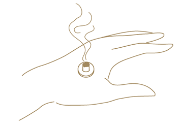
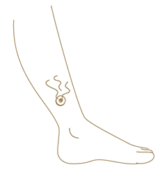

心と体にやさしいお灸
広島健康堂

お灸について
お灸は一般的にモグサを皮膚の上(ツボ)に置いて燃やし、その温熱刺激によって体調を整える治療技術です。
1400年前に中国から伝わったものですが、その長い歴史の中で日本人に合うように発展し、我が国の健康を支えてきた伝統医療です。


こんなことでお困りではないですか
お悩みをもつ方にお灸治療とセルフケアお灸をご提案いたします。
肩が凝る
ねむれない
お腹や手足が
冷える
生理痛が強い
お腹を壊しやすい
お灸の効果
免疫力がアップ

体に温熱刺激を与えることで、皮膚の下にある筋肉や血管、リンパ節が刺激されます。
細胞が活性化され免疫作用がアップするほか、リンパの流れが改善されるため、むくみの解消にもつながります。
体のさまざまな症状の改善

ツボを刺激することによって、冷え性や肩こり、腰痛、目の疲れ、むくみ、ストレス、不眠などといった体のさまざまな症状の改善が期待できます。
鎮痛・リラックス効果

もぐさの有効成分「シネオール」が強力な消毒・殺菌・鎮静・鎮痛作用などがあります。
この成分が皮膚の表面から内部に浸透していき、痛みを和らげるなどの効果が期待できます。
セルフケアお灸
このような方にはセルフケアお灸をご提案いたします。
ご自宅でお灸をして癒されたい方
お仕事が忙しく通えない方
遠方よりお越しの方

セルフケアお灸手順
- 1.ツボの確認
- ツボの確認は、押してズーンやズキっと痛みや重苦しい感覚を確認することです。押して痛みがないところはお灸する必要はありません。
- 2.お灸に火をつける
- 安全性を考慮して、直接患部に置いてからお灸に火をつけるのではなく、合谷付近で一度点火をして置きたいツボに移動させましょう。
- 3.お灸を患部にのせる
- 台座灸は初めに煙が発生しますが、60〜90秒ほど続き、次第に熱さが弱まってきます。5分くらい経つと台座横の部分をさわっても熱くなるため指でつまんで灰皿に捨てます。
おすすめのツボ
合谷(ごうこく)
親指と人さし指の骨がまじわったところから、やや人さし指よりのへこみが合谷です。
症状：頭痛・首、肩こり・花粉症・歯痛・養生
三陰交(さんいんこう)
内くるぶしの高いところに小指をおき、指幅4本そろえて、人さし指があたっているところが三陰交です。
症状：冷え・ひさ痛・じんましん・不安・シミ